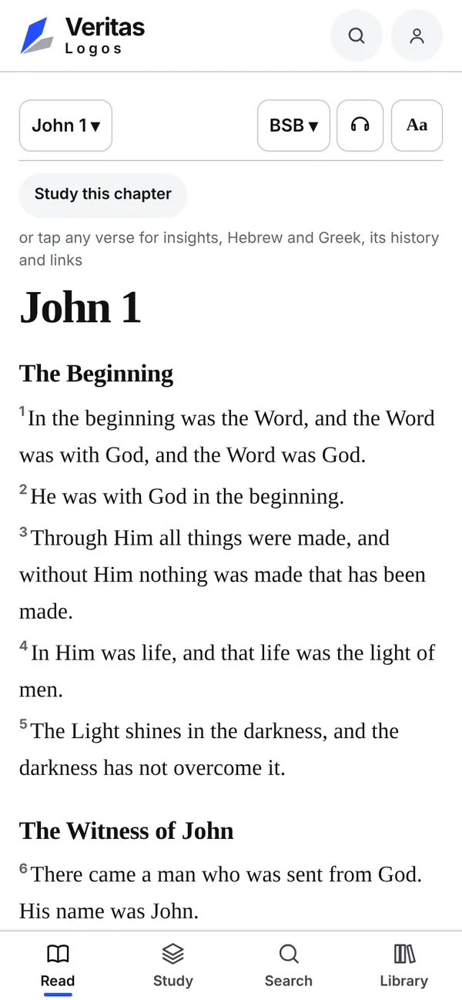
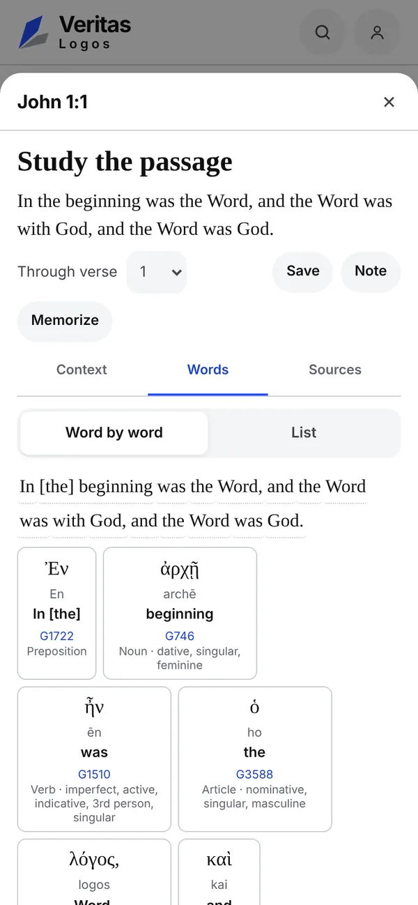
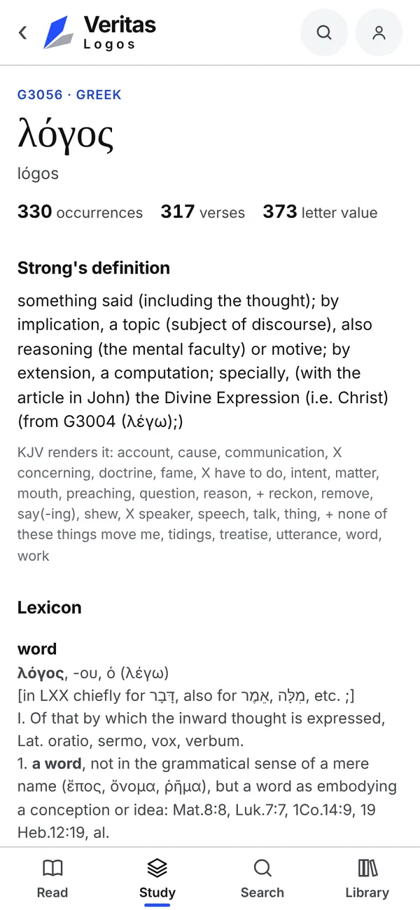
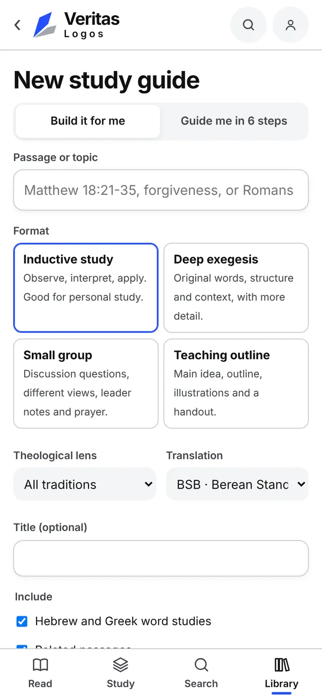
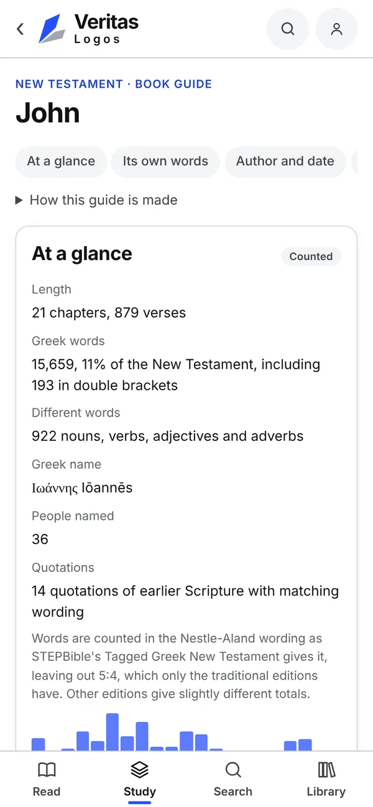
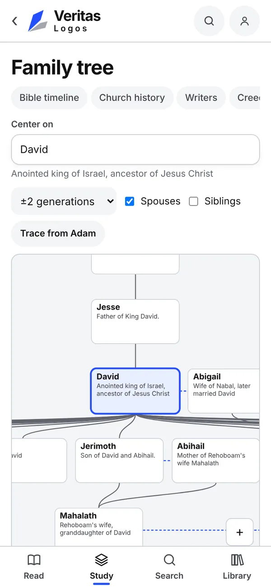
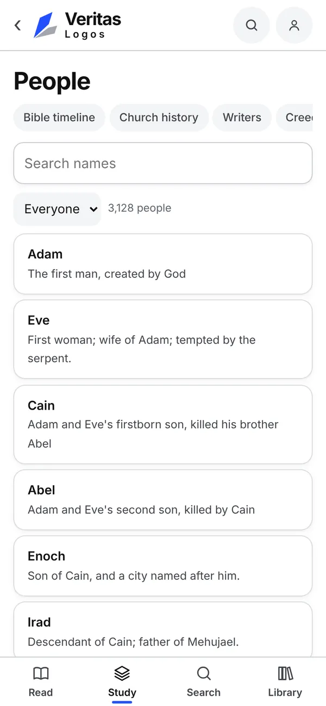
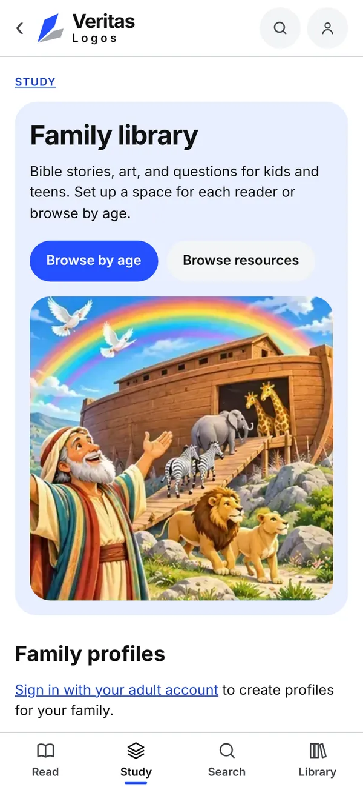

Open the Bible, and go as deep as you want.
Read in 23 translations. Tap any verse for the Hebrew or Greek behind it, where it's quoted, what the church has said about it and who's in it. Then build a study guide from what you find.
Free, with no ads and no account needed. Funded by donations.
- ἘνenIn
- ἀρχῇarchēbeginning
- ἦνēnwas
- ὁhothe
- λόγοςlogosWord
G3056 · Greek
λόγος lógos: something said; a word, a reason, a message. In John, the Word who was with God and was God.
330 times in the New Testament, in 317 verses.
In the beginning was the Word, and the Word was with God, and the Word was God.
From one verse to the whole picture
Reading stays simple. Everything else waits one tap away, and every fact comes from a named source you can check.

Read
23 translations, from the Berean Standard Bible and the King James to the Geneva Bible and the JPS Tanakh. Listen with the built-in read-aloud voice.

Tap a verse
See every Hebrew or Greek word with its grammar, plus study notes, cross-references, where creeds and confessions cite it, and which topics it belongs to.

Follow a word
Open any word for its definitions, lexicon entries and every place it appears, then search the whole Bible by the original word.
Build a study guide in a few minutes
Start from a passage or a topic, like Matthew 18:21–35 or forgiveness. Pick the kind of guide you need, and Veritas Logos puts it together from the text, word studies and related passages. Edit it, export it, share it by link, or put it on your church's website.
- Inductive study
- Observe, interpret, apply. Good for personal study.
- Deep exegesis
- Original words, structure and context, in more detail.
- Small group
- Discussion questions, different views, leader notes and prayer.
- Teaching outline
- Main idea, outline, illustrations and a handout.
Choose a theological lens (Reformed, Catholic, Orthodox, Baptist, Pentecostal and more) or read across all traditions.




The people, places and history around the text
Over 3,000 people of the Bible, each family link backed by the verses that state it. Draw a family tree, trace how two people are related, or see everyone on one timeline. Beside them: a church history timeline of councils, creeds and reformations, 45 creeds and confessions, early Christian writers, and a guide to every book of the Bible.
The Family library, for kids and teens
Bible stories with pictures, questions to talk about, worksheets, crafts and games, sorted by age. A parent can set up a space for each child with just a nickname and an age group; no child's email or birthday is asked for.
Churches use the same lessons in Sunday school through Our Faithful Church App.

Use it anywhere
- On the web
- Works now on any phone, tablet or computer at veritaslogos.com/app. Download a translation and the study tools to keep reading offline.
- Android
- Coming to Google Play.
- On your website
- Put a passage, a word study, a biblical person or a study guide on any web page with a short snippet of code.
Questions
What does it cost?
Nothing. Veritas Logos is free, with no ads and no paid features. It's funded by donations from people who want to see it help more people study the Bible.
Do I need an account?
No. Everything you make stays on your device. Make a free account only if you want your guides, notes and highlights on more than one device.
Where does the information come from?
From named sources you can check: the Bible texts, Strong's and other lexicons, the Tyndale Open Study Notes, Nave's topics, historic creeds and confessions, and open datasets of biblical people. Each one is credited where it's used.
Is it for one church tradition?
No. It shows the historic creeds and writers of many traditions side by side, and you can read through a particular tradition's lens or all of them.
Can I connect YouVersion?
Yes. Connect your YouVersion account to bring your highlights in as you read, and to send highlights you make here back.